阅读建议
这一页整理为更适合连续阅读的攻略版本。对应章节源文件：zelda-tp-ch5.html 生成。文中配套图片会通过站内本地路径提供，便于稳定阅读。
你可以通过侧边栏保持章节顺序，也可以随时切换中英文版本，对照阅读同一页面。
第 5 章
离开房间后，来到镜之古墓，在接近中间的高台时，暗影怪物再次出现，消灭他们后用陀螺仪到达顶部转动机关使其降下，之后一群镜子看守者会出现，并讲述这里以前曾发生的故事。
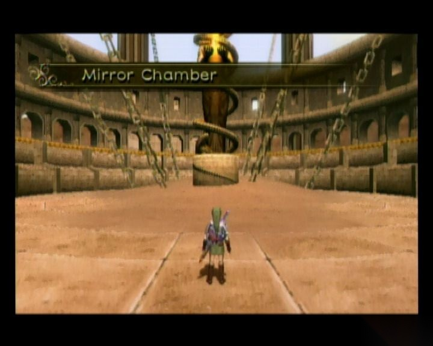
这一页整理为更适合连续阅读的攻略版本。对应章节源文件：zelda-tp-ch5.html 生成。文中配套图片会通过站内本地路径提供，便于稳定阅读。
你可以通过侧边栏保持章节顺序，也可以随时切换中英文版本，对照阅读同一页面。
离开房间后，来到镜之古墓，在接近中间的高台时，暗影怪物再次出现，消灭他们后用陀螺仪到达顶部转动机关使其降下，之后一群镜子看守者会出现，并讲述这里以前曾发生的故事。
原来之前这里曾关押过一名用有强大恶魔力量的黑暗盗贼—— 加农道夫（Ganondorf）。在经过审判后，镜子看守者决定将其处死，然而，拥有强大力量的加农道夫在被刺穿身体后并没有死亡，他反而依靠自己的力量挣脱枷锁并杀死了一名镜子看守，其余几名镜子看守急忙联合自己的全部力量终于将其封印在了黎明世界中，而由于镜子看守的死亡，他所守护的那面镜子也裂成碎片并遗落到世界各地。现在要打开通往黎明世界的入口，就必须找回三片失落镜子碎片。在几名镜子看守的恳求下，林克答应帮助找回三片失落的碎片。而米德娜也被林克的举动所感动，告诉林克自己最初本来只打算利用林克帮自己夺回暗影皇冠（Fused Shadow），然而在长期和林克相处之下慢慢被林克感化。随后林克便离开镜之古墓，回到海拉尔城特尔玛的酒馆。
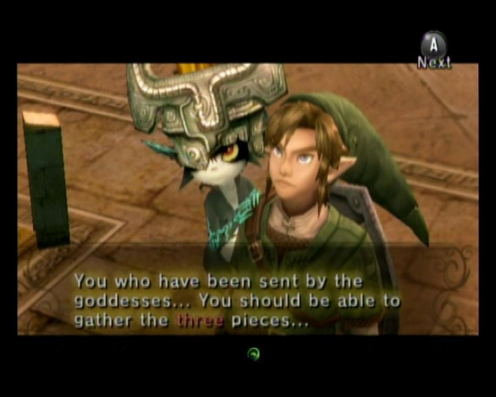
在镜子看守的恳求下，林克答应帮助找回三片失落的碎片
在酒馆里，林克从特尔玛那里得知那群人里的阿雪（Ashei）最近离开了。于是前去和他们谈话，得知阿雪去了雪山（Snowpeak），于是查看桌上的地图后知道了阿雪的具体位置，随后林克让米德娜传送到佐拉原住地，顺着河游下瀑布，从左下的路出去到达雪山。
找到阿雪后，她告诉林克，前面的暴风雪太大，普通人根本不可能通过，只有一种叫 Reekfish 的特殊红鱼能通过前面的暴风雪地带。拿到阿雪的草图（Ashei's Sketch），林克决定找到这种鱼。
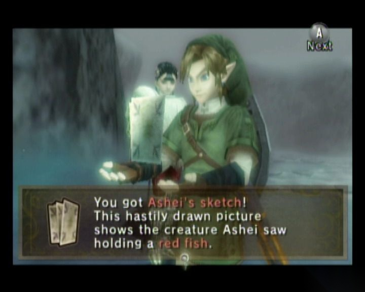
得到阿雪的草图
先将阿雪的草图出示给门口的两个佐拉士兵看，他们告诉林克红鱼是种很特殊的鱼，他们知道的也并不多，但是告诉林克拉里司王子（Prince Ralis）知道许多关于红鱼的事，于是林克前去卡卡里科村找拉里斯王子询问关于红鱼的事。
在之前得到佐拉盔甲的地方找到了拉里斯王子，他告诉林克红鱼是种很特别的鱼，生活在佐拉原住地下面湖泊的子母岩（Mother-and- Child Rock）附近，并且需要特别的鱼饵才钓得到，随后王子将鱼饵交给林克，拿到鱼饵后再回到佐拉原住地，到瀑布下面的湖泊的子母岩旁边的岸上钓红鱼（即一大一小露出水面的岩石），得手后变狼调查红鱼后，可以得到追踪红鱼气味的能力，随即前往冰山。
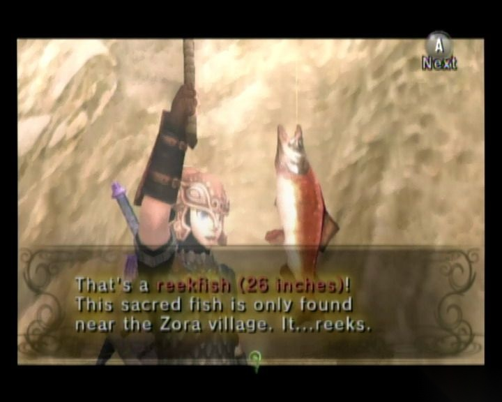
使用特殊的鱼饵钓到了红鱼
林克到冰山后，利用感知追寻红鱼气味一路前进（不然在第一块区域会因为迷路而冷死）。该区域的冰狼，狼形态下会比较容易对付（人会因为雪地和攻击速度的问题倍受打击），一路前进，只要跟着气味走，应该没什么问题，在尽头会发现气味朝山上延伸，从右边的台阶上可以爬到上层，继续追踪，途中还会遇到一处过不去的地方，撞击面前的墙会使上面的雪落下并铺出一条新的路，林克一直追踪气味直到尽头后，挖地上的土可进入到一个山洞。
进入山洞林克跟随气味一直出去，继续追踪会发现一处嚎叫岩石，然后在四周寻找会发现红鱼被一个雪人抓住了，林克前去和雪人谈话，谈论中林克得知雪人叫亚托（Yeto），并且他家中有一片镜子碎片，随后雪人邀请林克去自己家共进晚餐，随后滑着雪板离开。撞击旁边的树后同样能得到一块滑雪板，随后顺着路一直滑到尽头的雪山废墟（Snowpeak Ruins）。
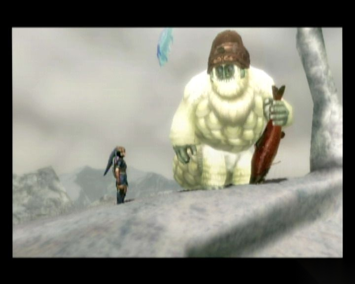
跟随着红鱼的气味，林克遇到了雪人亚托，后者邀请林克去他家
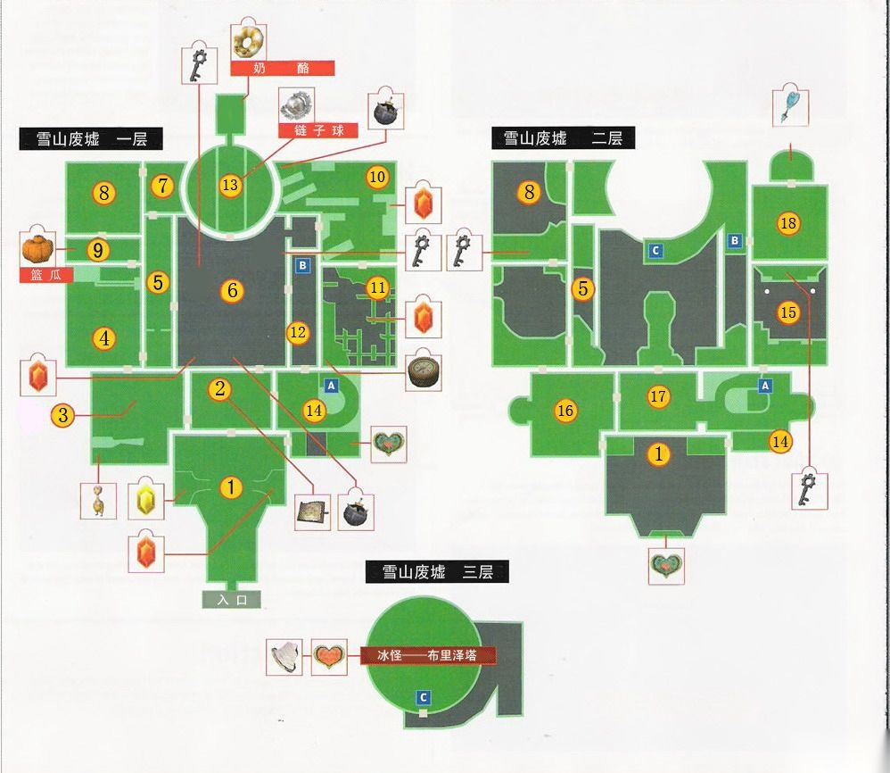
雪山废墟迷宫地图
房间 1：杀掉进门遇到的灵魂妖怪得到魂魄后从北面的门来到房间 2。
房间 2：这里遇到了亚托的妻子亚塔（Yeta）。亚塔告诉林克，家里确实有一块镜子碎片，就放在自己的卧室里，而且自己得到这块碎片以后自己的身体就日渐削弱，所以老公才去给自己抓鱼吃滋补身体，另外亚塔将废墟的地图交给林克并将钥匙所在位置标记在地图上。去西面的房间找到亚托，他会让林克先尝一口汤，这里开始可以用空瓶装汤回血，这点很重要，因为这个迷宫的怪物和坛子是不会掉回血物品的。南面的坛子里有这个迷宫的欧库。走北面的门进入房间 4。
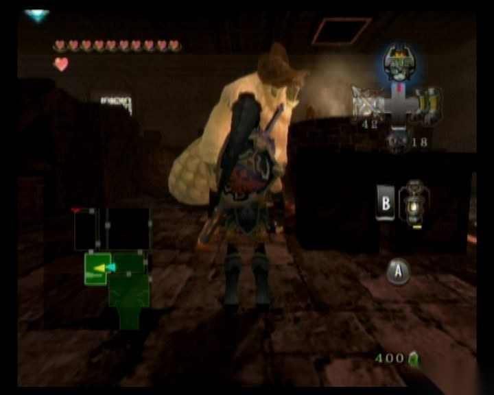
亚托请林克喝汤
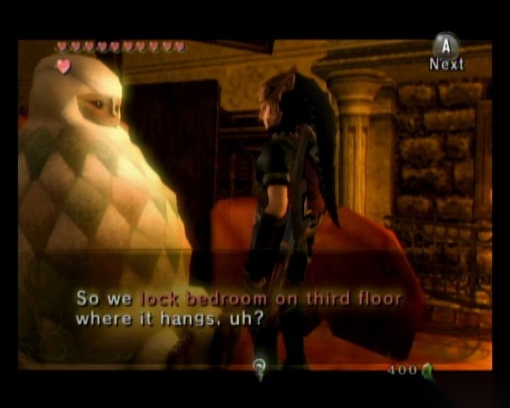
亚塔告诉林克家里镜子碎片的事情
房间 4：这个房间中间有片冰冻地，上面有三个箱子，不过其中一个被冻上了，将可以推动的箱子推到一块机关上打开东面的门，注意在这个迷宫里千万不能穿佐拉盔甲。走东面的门到房间 5。
房间 5：这里用狼开感知可以发现地洞，挖出去能到房间 6。
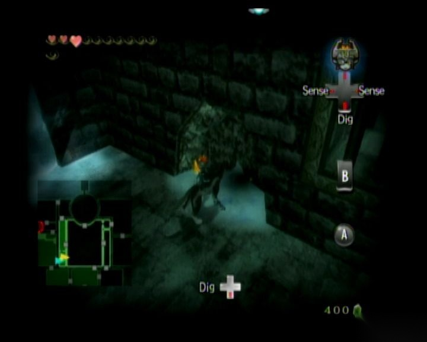
利用狼的感知发现地洞
房间 6：在地上看到一个冒出雪地的东西，挖下去能发现一个箱子，里面有小钥匙一把，打开西面的门能回到房间 5，注意房间 5 里的冰螺怪，被碰到的话会被冻成冰块，朝北面到房间 7。
房间 7：干掉所有的冰螺怪后打开门，接着去房间 8
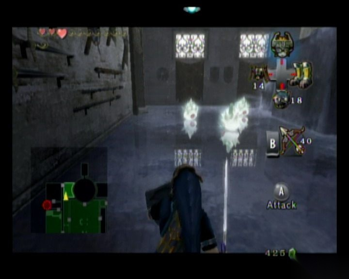
消灭冰螺怪
房间 8：这里会遇到两个冰骷髅，站到一定距离的话他们会扔冰矛攻击林克，不过可以站到更远的地方用炸弹箭攻击他们，当然也可以直接冲上去砍掉，干掉他们两个后朝南面到亚塔标记的房间 9。
房间 9：看到了箱子，打开后却只有一个蓝瓜，于是回到房间 2 问亚塔。
房间 2：亚塔说可能是亚托把钥匙拿到其他地方了，让她回忆一下，顺便让林克把蓝瓜交给她的丈夫，他刚才正在找蓝瓜做调料。
房间 3：去房间 3 将蓝瓜给亚托，于是他将鱼汤升级，这样鱼汤就能恢复更多的生命值了。再回到房间 2，亚塔回忆起钥匙的位置了，于是给林克标记了新的位置，并将东北的门打开，可以通往房间 6 的右半部分。
房间 6：这次到的是房间 6 右边的部分，中间有门大炮，当然现在还不能使用，房间没什么能做的，直接到东北的窗子爬过去到房间 10。
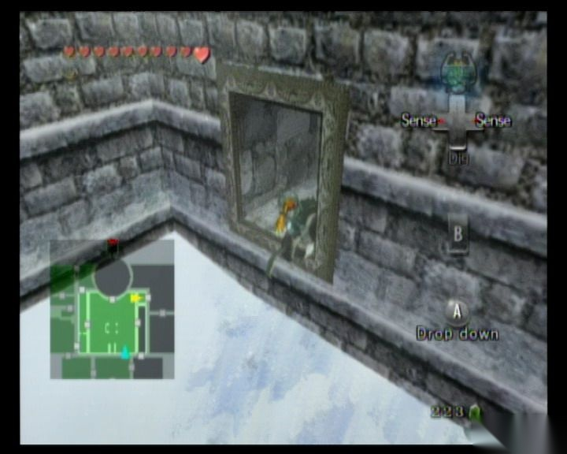
爬窗子进入房间 10
房间 10：从过道中过去，小心两边的冰块和地上的冰螺怪，途中的铁球记得一起搬走，这个是炮弹，在房间东北有门大炮，将炮弹放进去，然后再放一颗炸弹进去可以发射，发射之前记得先把炮口调整到最南面。之后大炮会轰出一条路，接着走南面的门到房间 11。
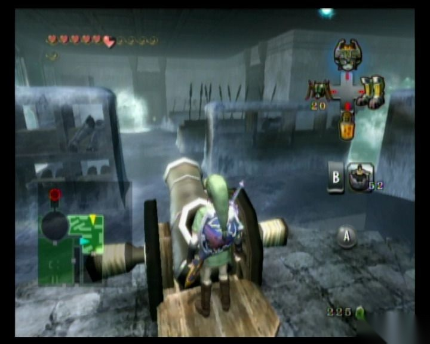
把炮弹放入大炮内，用炸点发射炮弹，轰出一条路来
房间 11：房间西南角的箱子里有指南针，一定要拿到，过去的路很危险，要注意不要做大幅度运动，先朝南面走，路上的冰螺可以用飞爪打掉，冰蝙蝠可以在远处先用弓射掉，先朝南走在第一段路的尽头不要直走，靠近岔道的时候直接朝右边跳，否则走上去就会直接滑下去，再向前前进一段后可以用陀螺仪过最后的岔口，也可以朝右边绕过去拿指南针，之后能利用飞爪回到进来的门而不用再走一次，返回到房间 6。
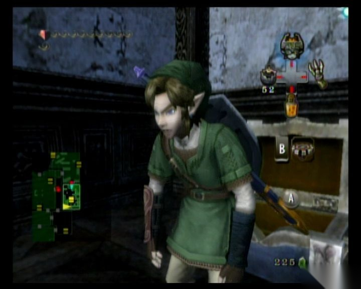
生命值不高的时候林克看起来就弱弱的，一定要提前用瓶子装上汤来回复体力
房间 6：在指南针的指引下找到东北附近的箱子，里面有小钥匙，可以打开东面的大门，进去后到房间 12。
房间 12：房间 12 有炮弹，先将门旁边的机器拉下来，让勺子处于房间 12 这边，然后抱一个炮弹放到上面去，再回到房间 6，在对应位置拉下把手可以把炮弹取出来，之后可以利用大炮将北面的怪物干掉，随后进入房间 13。
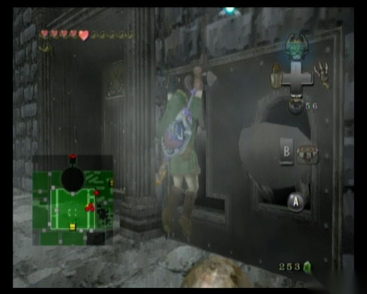
将门旁边的机器拉下来
房间 13：这里是小 BOSS 战斗，BOSS 使用一个链子球进行攻击，只有背面对 BOSS 的攻击才有效果，注意躲避他的攻击，可以利用天花板用飞爪躲避，在 BOSS 做出攻击后会有一段硬直时间，利用此时迅速砍其后面露出的尾巴，胜利后可取得 BOSS 的武器链子球（Ball and Chain），能用其砸开冰块和不结实的地板，还能干掉之前需要用大炮才能干掉的大冰怪。随后去北面标记的房间里拿钥匙，结果却是一个奶酪，只好再回到房间 2 找亚塔。亚塔告诉林克可能又是丈夫把钥匙放别处去了，不过现在他正在找奶酪做汤，让林克先把奶酪交给丈夫而自己再回忆下钥匙的位置。去房间 3 把奶酪交给亚托后，汤可以恢复更多的生命了，回到房间 2 找亚塔，她再次为林克标记新的钥匙位置并将房间东面的门打开，进入房间 14。
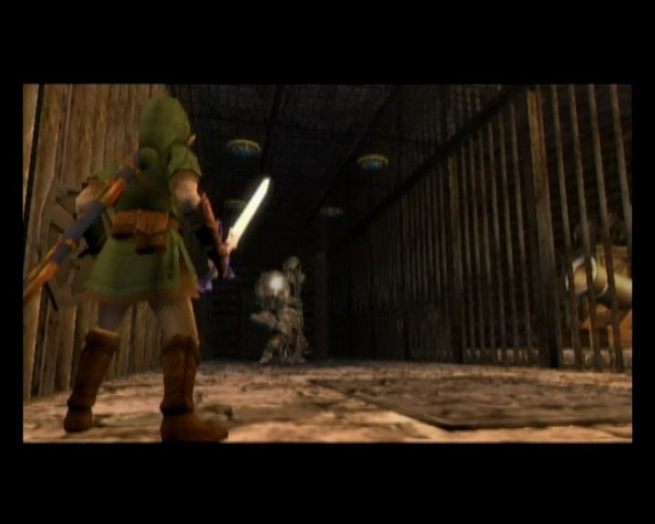
和小 BOSS 作战
房间 14：来到房间 14 先去旁边的门到房间 12，把箱子推下去然后取一个炮弹回来，利用门上的机器将炮弹送回房间 14，然后从螺旋梯上到房间 14 的顶部，注意把路上的两个怪干掉，否则后面拿炮弹的时候会很麻烦。上到顶部，将冰块砸开可以见到一个灵魂妖怪和一门大炮，先不管，房间东南的地板可以用链子球砸开，跳下去可以得到一片 心之碎片 23，然后用飞爪回到房间 14，走北面的门到房间 15。
房间 15：用链子球砸中间的吊灯下部让吊灯晃动起来，然后跳过去到对面的箱子取得小钥匙，回来的时候可以用西南墙上的飞爪，回到房间 14，打开房间西南的锁到房间 1 的楼上。
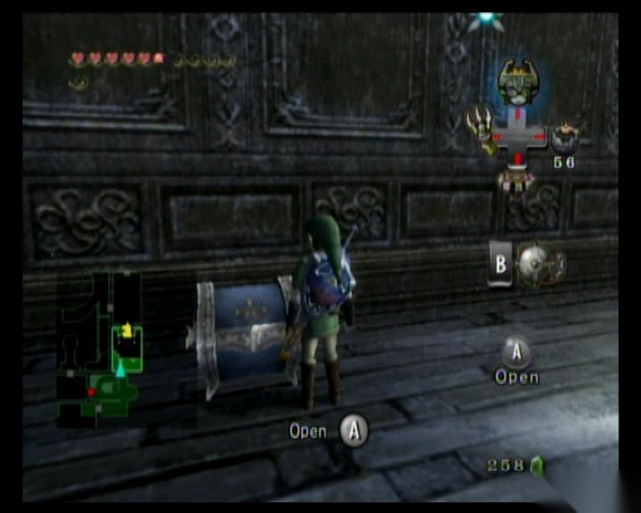
在宝箱中拿到小钥匙
房间 1：先把墙上的冰块砸开，利用链子球砸动吊灯，再去最南边的 2 层的箱子里取得 心之碎片 22，然后走西北的门过去到房间 16。
房间 16：将箱子推下去到房间 4，把中间的冰块和被冻上的箱子都砸开，随后想办法把箱子推到正中的机关上打开房间 2 楼东面的门，再从刚才推下楼的箱子上可以爬回 2 楼，从东面的门进去到下一个房间，一路朝北走，在挡路的墙前面用飞爪过去，可以到房间 8 的楼上，然后利用链子球打吊灯，过去房间南面取得一把小钥匙后回到房间 16，用钥匙打开右边的门再到房间 17。
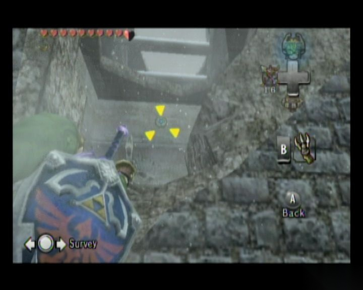
这里要用飞抓才能过去
房间 17：干掉房子中间的大冰怪，再把东面的冰块打开，把箱子推下去，可来到房间 14，将之前放在门口的的炮弹搬上楼，并用大炮朝房间 17 发射，之后再到房间 17，利用北面墙上的机器将炮弹送出去到阳台上，再出去到阳台上将炮弹放进大炮然后朝东北方发射，可以干掉楼梯上挡路的大冰怪，之后可从那里上去到房间 18。
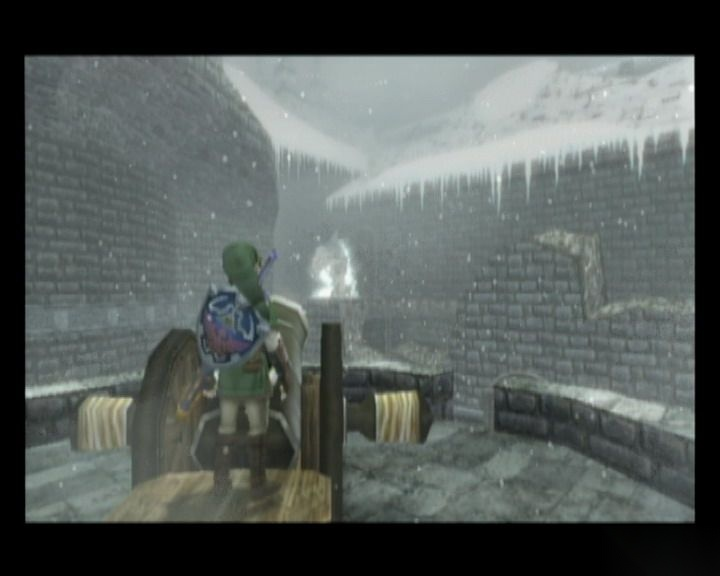
利用大炮干掉大冰怪
房间 18：干掉房间里的全部冰骷髅后北面的门可以打开，随后终于取得了大钥匙，出门后亚塔也刚到这里，然后她会带林克去卧室拿镜子，跟着她去卧室，结果因为亚塔太沉迷于照镜子，被镜子的魔力所影响，而成为了冰怪——布里泽塔（Twilit Ice--Blizzeta）。
BOSS 战：冰怪——布里泽塔
布里泽塔体型异常巨大，攻击方式是震落身上的冰块并向四周扩散进行攻击，对付碎冰只需将链子球舞动起来就可以解决，用链子球三下就能轻松搞定布里泽塔的第一阶段。之后布里泽塔会飞起来并召唤许多小冰柱，注意地上的反光，先躲开小柱子的攻击，冰柱会在周围落下一个圈，然后布里泽塔就会在中间落下，躲开后用链子球攻击，很快就可以击败她。
战胜布里泽塔后，亚托会冲进来，而布里泽塔也变回亚塔，一番亲热后林克也得到了第一片镜子碎片。
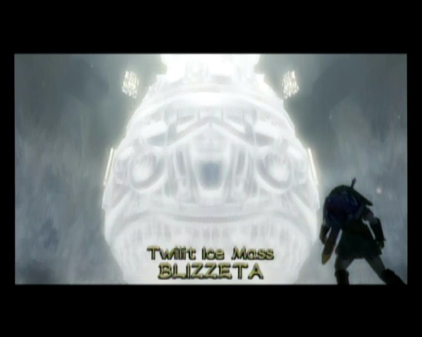
BOSS：冰怪——布里泽塔
参考：
这套双语站保持稳定的阅读顺序，便于你按一致的节奏浏览 Twilight Princess 相关内容。
{kind=link}
{kind=link}
{kind=link}
{kind=link}
{kind=link}
{kind=link}
{kind=link}
{kind=link}
{kind=link}
{kind=link}
{kind=link}
{kind=link}
{kind=link}
{kind=link}
{kind=link}
{kind=link}
{kind=link}
{kind=link}
{kind=link}